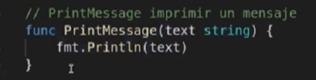
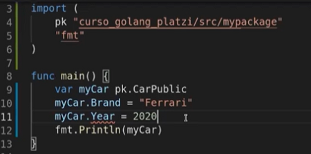
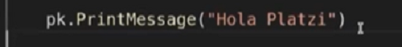
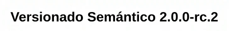

2. Creado por Google 2009 (con la potencia de C pero con la sintaxis amigable de python)
3. Soporte nativo para concurencia multitarea
4. Documentacion
5. Como configurarlo
6. lenguaje de programacion de codigo abierto
7. El garbash collector es mas eficente de 100 us a 10 us
{{abreDiamante}} {{cierraDiamante}} No se les llaman “Operadores Diamante”, su nombre Oficial es Genéricos
GOBIN : Es donde se van a instalar todos los binarios listos para ser ejecutas en cualquier PATH
GOROOT : Es donde se va a agregar el ejecutador de root
Despues con estas variables ya inicializados creamos el PATH para que sea posible crear en cualquier parte del equipo export PATH:$PATH:$GOBIN:$GOROOT/bin ahora para verificar que este correctamente instalado Ver Documentacion debemos verificar que la variable del path quede en las variables de entorno del equipo y despues verificamos que este apuntado a la carpeta donde se instalo con echo %PATH% no devuelve como respuesta Go
godoc fmt //documentation de la liberia
go fmt xProyecto.go //Dar formato al proyecto
go version //ver la versiond de go instalada
go mod vendor //en caso de inconsistencia en alguna libreria
mkdir go //instalar el entorno para ello se crean los directorios
go build archivoX.go //con este comando compilamos el archivo para crear el ejecutable
go run archivo.go // lo ejecuta sin compilar ya que crea un archivo temporal
dentro de la carpeta go debe haber tres carpertas= bin pkg src sino crearlas
bin: En esta carpeta se almacena todos los ejecutables que utilicemos o creemos pkg: Guarda cierto codigo de las dependencias librerias que utilicemos
src: Aca estara todo el codigo escrito en Go y el codigo de las librerias de terceros
int = 0
string = "string vacio"
bool = false
si las variables son declaradas e inicializadas pero no usadas no compila
variable := 8 //esto quiere decir que declara y go internamente ajusta el tipo de la variable
int = pueden tomar valores negativos
uint = si sabemos que siempre van a ser positivos
"%d" = indica que el valor que va hay es un entero
"%v" = indica que el valor que va hay puede ser cualquiera
"%T" = Conocer el tipo de Xvariable
Print = imprime
printf = imprime insertando varaibles dentro del string
Sprintf = almacena un string en una variable
Fprintf("....") // devolver un texto
En Go no existen las clases en su lugar existen los struct
fmt.Println(len(MyArray)) // len(Muestra el tamaño de MyArray)
fmt.Println(cap(MyArray)) // cap(Muestra la capacidad de MyArray)
sinfoni = phpFundation
Go = gorilla/mux install = go get -u github.com/gorilla/mux

las siguientes se usan en un ciclo for
break: saca al ultimo ambiente rompe el ciclo for
continue: Se emplea en casos tener tener un error controlado haciendo que se continue con la ejeccucion del programa no rompe el flujo de ejecucion
Slices: No tiene tamaño definido
Es una estructura de datos muy conveniente cuando tienes dos o mas listas que se relacionan entre si ya que con el caso de los maps tenemos acceso mediante una llave y valor ademas ten en cuenta que los maps son mas eficientes que manejar slices o arrays ya que de forma nativa ellos implementan concurrencia para poder interacturar enter las operaciones que se vayan a ejecutar con ellos
La clase abstracta Dictionary es la interfaz para crear diccionarios en las colecciones historicas (vector, stack, Dictionary, HashTable, Enumeration) y procesa la coleccion como si fuera un array asociativo ak que se accede por una clave
la clave y el valor de cada elemento son de tipo objeto
La clase de los objetos "clave" debe disponer del metodo int hashCode() utilizado para dispersar el elemento, tambien deben deisponer del metodo equals() para poder realizar busquedas y comparaciones
Sirve para comparar objetos de una forma mas rapida en estructuras Hash ya que solo devuelve un numero entero(key)
Map
HashMap
treeMap
Declaracion de tipo parametrizado
mayuscula = publico
minuscula = privado
Debe tener un comentario, y se debe importar el paquete y opcionalmente se le puede colocar un alias si la varaible empieza por minuscula es privada es por esta razon que da error en la segunda imagen



Cuando se crea una variable lo que hace el runtime es crear una direccion de memoria y en ese espacio guarda Xcosas
se usa & para hacer Referencia a la direccion de memoria linea 9 el valor de b va a ser la ubicacion de memoria de a
se usa * para hacer Referencia al valor que hay guardado en Xdireccion linea 14 *b= 4
go init mod github.com/jugutafur/nombrePaquete
El versionado semantico hace referncia a la correcta identificacion de los versiones de las librerias donde:
1°. Version mayor
2°. Version menor
3°. Parches y
4°. Realise o precantidados (si se requieren hacer pruebas con otros desarrolladores o otras pruebas beta de la palicacion "version beta, alfa...etc")
Ahora despues de crear el archivo go.mod crea un archivo go.sum En este archivo.sum estara identificado de manera inequivoca las versiones de las librerias que son empleadas en el proyecto pro medio de fecha y hash

go list all //me muestra todos los modulos que estan en $GOPATH
go list -m all //muestra puntualmente los modulos que estan siendo usandas en la ruta donde se ejecuta este comando
go list -m -versions Xpaquete //muestra todas las versiones disponibles
go list verify //Verifica que la version del modulo no ha sido modificada
2. esta ubicacion arranca desde el GOPATH recordar que: GOPATH= C/Go perooooooo arranca desde src principal NOTA esto es en el caso de trabajar desde las carpetas de donde esta instalado Go en C pero si trabajar en cualquier otra ubicacion debes trabajar con modulos es decir con go.mod ver mas inf
3. para llamar al struct se puede por el alias o por el nombre del pakage donde se define o nombre del mismo Xarchivo.go que por lo general se llaman igual
4. La salida da valores por defecto cuando no se definen